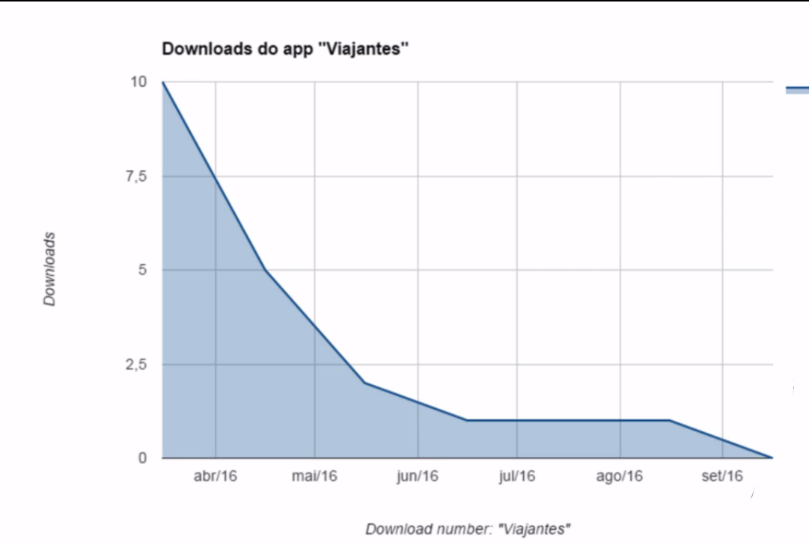

Neste curso abordaremos um pouco da estratégia de UX: como temos ideias? Como escolhemos, dentre as opções disponíveis? Em resumo, descobriremos como melhorar nossas escolhas na hora de criar um aplicativo, site, produto ou serviço. Antes de iniciar, é recomendável que você faça o curso UX: o que é experiência de usuário (https://www.alura.com.br/curso-online-ux-base). Nosso objetivo principal será criar um aplicativo que ajude viajantes a encontrarem companhia, independente do destino da viagem. Algumas funcionalidades previamente pensadas são:
A partir destes pontos já é possível esboçar alguns sketches. Acrescentaremos um logo, um campo de busca, botões, e assim por diante. Planejamos três telas:

Agora, além de criarmos os esboços nós também já montamos as telas utilizando o Photoshop, já contratamos um desenvolvedor, criamos uma propaganda para o aplicativo e lançamos ele na App Store. Diante de todas essas circunstâncias observe o que aconteceu:
Nosso aplicativo teve um pico de usuários de dez pessoas e, depois, esse número reduziu até zerar. Por que isso aconteceu com o aplicativo de viajantes? Isso aconteceu porque às vezes o processo de UX é ignorado, e os profissionais seguem diretamente para o Design. Outra abordagem para lidar com aplicativos é pensar mais e melhor na estratégia, assim, em vez de começarmos a elaborar diversas funcionalidades, vamos refletir: realmente faz sentido implementar todas elas? Pensar mais antes de agir é interessante, pois nos tornamos mais assertivos! A estratégia nos direciona a entender com mais clareza sobre quais são os nossos reais objetivos. Neste curso de UX Strategy, falaremos sobre estratégia voltada para experiência dos usuários, veremos diversas ferramentas como: persona, proto persona, value propositions canvas, 360 view, pesquisas e exercícios. Esse curso será focado na parte mais abstrata da UX Strategy, como em levantamento de requisitos, priorização e organização de ideias! Não abordaremos os assuntos Design, prototipação ou testes de usabilidade.